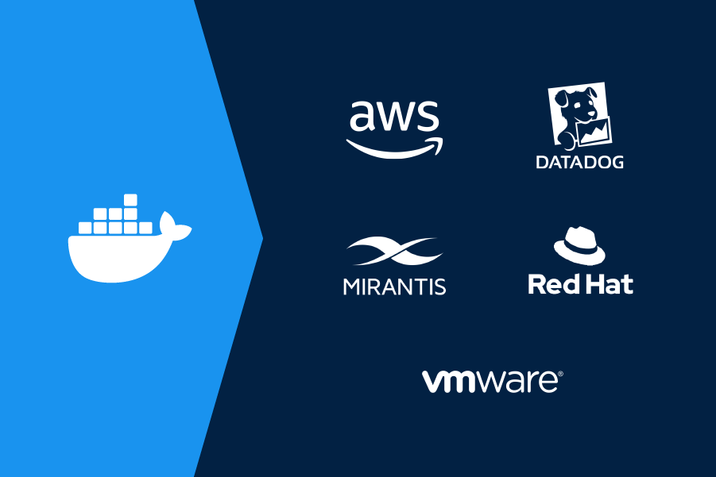

Just released:
Learn about improved Volume Management,

WHAT'S NEW
Docker Expands Trusted Content Offerings for Developers
New collaborations with AWS, Datadog, Mirantis, Red Hat, VMware and other industry leaders expand access to trusted application building blocks to more than eight million registered Docker developers.
Learn More!